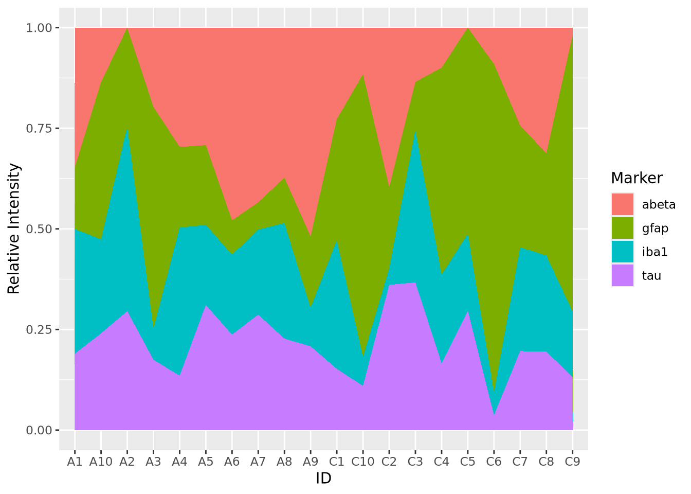
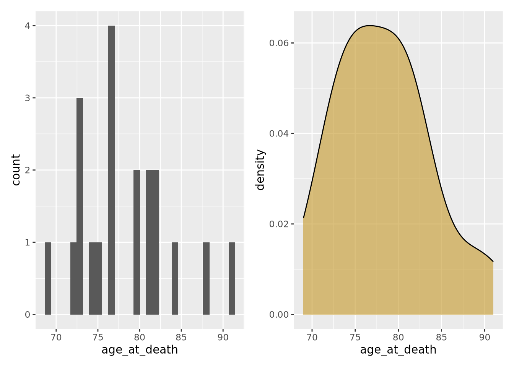
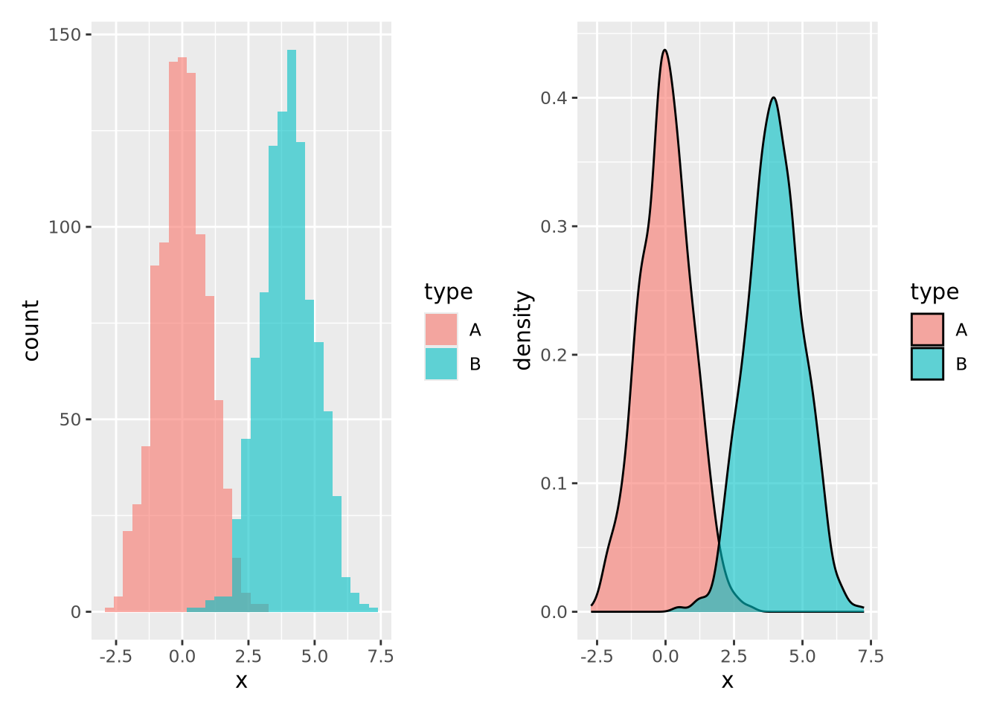
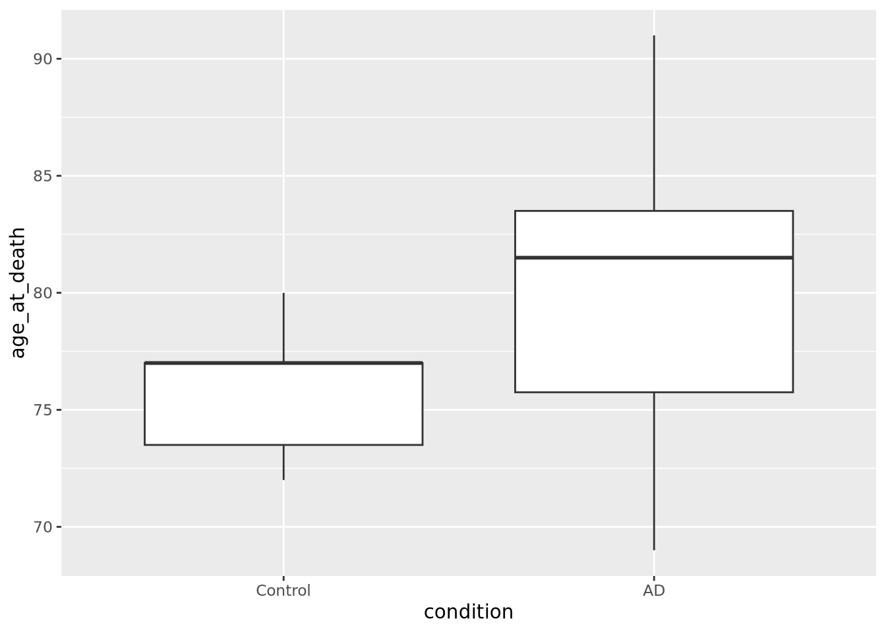
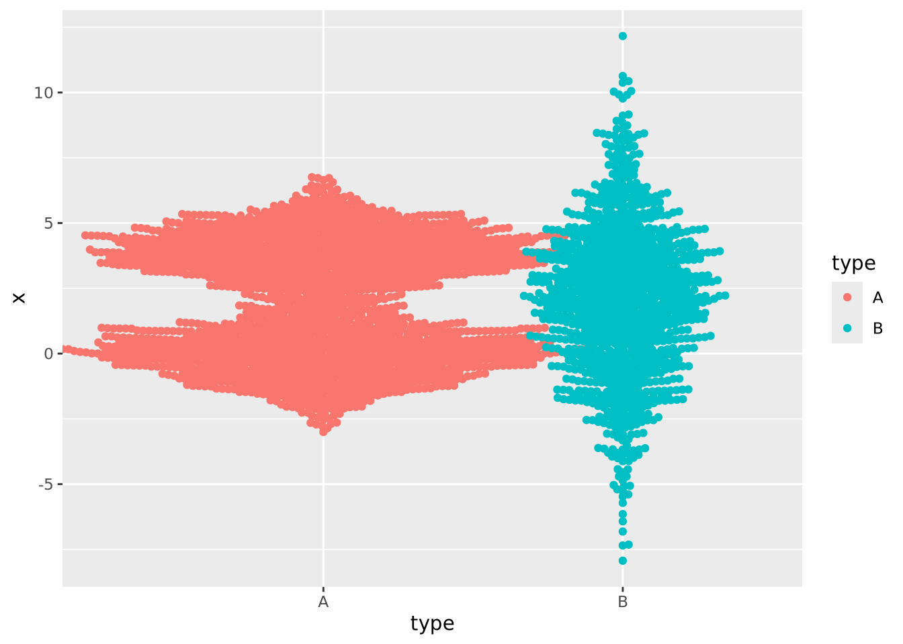

- Syllabus
- 1 Introduction
- 2 Data in Biology
- 3 Preliminaries
- 4 R Programming
- 4.1 Before you begin
- 4.2 Introduction
- 4.3 R Syntax Basics
- 4.4 Basic Types of Values
- 4.5 Data Structures
- 4.6 Logical Tests and Comparators
- 4.7 Functions
- 4.8 Iteration
- 4.9 Installing Packages
- 4.10 Saving and Loading R Data
- 4.11 Troubleshooting and Debugging
- 4.12 Coding Style and Conventions
- 4.12.1 Is my code correct?
- 4.12.2 Does my code follow the DRY principle?
- 4.12.3 Did I choose concise but descriptive variable and function names?
- 4.12.4 Did I use indentation and naming conventions consistently throughout my code?
- 4.12.5 Did I write comments, especially when what the code does is not obvious?
- 4.12.6 How easy would it be for someone else to understand my code?
- 4.12.7 Is my code easy to maintain/change?
- 4.12.8 The
stylerpackage
- 5 Data Wrangling
- 6 Data Science
- 7 Data Visualization
- 8 Biology & Bioinformatics
- 8.1 R in Biology
- 8.2 Biological Data Overview
- 8.3 Bioconductor
- 8.4 Microarrays
- 8.5 High Throughput Sequencing
- 8.6 Gene Identifiers
- 8.7 Gene Expression
- 8.7.1 Gene Expression Data in Bioconductor
- 8.7.2 Differential Expression Analysis
- 8.7.3 Microarray Gene Expression Data
- 8.7.4 Differential Expression: Microarrays (limma)
- 8.7.5 RNASeq
- 8.7.6 RNASeq Gene Expression Data
- 8.7.7 Filtering Counts
- 8.7.8 Count Distributions
- 8.7.9 Differential Expression: RNASeq
- 8.8 Gene Set Enrichment Analysis
- 8.9 Biological Networks .
- 9 EngineeRing
- 10 RShiny
- 11 Communicating with R
- 12 Contribution Guide
- Assignments
- Assignment Format
- Starting an Assignment
- Assignment 1
- Assignment 2
- Assignment 3
- Problem Statement
- Learning Objectives
- Skill List
- Background on Microarrays
- Background on Principal Component Analysis
- Marisa et al. Gene Expression Classification of Colon Cancer into Molecular Subtypes: Characterization, Validation, and Prognostic Value. PLoS Medicine, May 2013. PMID: 23700391
- Scaling data using R
scale() - Proportion of variance explained
- Plotting and visualization of PCA
- Hierarchical Clustering and Heatmaps
- References
- Assignment 4
- Assignment 5
- Problem Statement
- Learning Objectives
- Skill List
- DESeq2 Background
- Generating a counts matrix
- Prefiltering Counts matrix
- Median-of-ratios normalization
- DESeq2 preparation
- O’Meara et al. Transcriptional Reversion of Cardiac Myocyte Fate During Mammalian Cardiac Regeneration. Circ Res. Feb 2015. PMID: 25477501l
- 1. Reading and subsetting the data from verse_counts.tsv and sample_metadata.csv
- 2. Running DESeq2
- 3. Annotating results to construct a labeled volcano plot
- 4. Diagnostic plot of the raw p-values for all genes
- 5. Plotting the LogFoldChanges for differentially expressed genes
- The choice of FDR cutoff depends on cost
- 6. Plotting the normalized counts of differentially expressed genes
- 7. Volcano Plot to visualize differential expression results
- 8. Running fgsea vignette
- 9. Plotting the top ten positive NES and top ten negative NES pathways
- References
- Assignment 6
- Assignment 7
- Appendix
- A Class Outlines
7.4 Visualizing Distributions
The distribution is one of the most important properties of a set of numbers. A distribution describes the general “shape” of the numbers, i.e. what is the relative frequency of the values, or ranges of values, within the data. Understanding the distribution of a data set is critical when choosing methods to apply, since many methods are only appropriate when data is distributed in certain ways, e.g. linear regression assumes the response variable is normally distributed, otherwise the result of the model cannot be interpreted properly. Often, we don’t know how our data are distributed when we obtain it and so we must examine the distribution empirically. The visualizations in this section are all used for the purpose of depicting the distribution of a set of numbers.
7.4.1 Histogram
The most common way to plot the distribution of a 1-D set of data is the
histogram. The histogram divides up
the range of a dataset from minimum to maximum into bins usually of the same
width and tabulates the number of values that fall within each bin. Below is a
histogram of our age_at_death measurement for all samples:
ggplot(ad_metadata) +
geom_histogram(mapping=aes(x=age_at_death))
Note that the histogram does not look very complete, because there are only 20 values in our data. We can mitigate this somewhat by increasing the number of bins the data range is divided into:
ggplot(ad_metadata) +
geom_histogram(mapping=aes(x=age_at_death),bins=10)
This is a little bit better, but there are still some bins (76-79, 84-87) that have no values. Compare this to the following synthetic dataset of 1000 normally distributed values:
tibble(
x=rnorm(1000)
) %>%
ggplot() +
geom_histogram(aes(x=x))
For distributions with a small number of samples, histograms might not be the best visualization. We will continue with synthetic normally distributed dataset for the remaining examples.
ggplot allows you to easily plot multiple distributions on the same plot:
tibble(
x=c(rnorm(1000),rnorm(1000,mean=4)),
type=c(rep('A',1000),rep('B',1000))
) %>%
ggplot(aes(x=x,fill=type)) +
geom_histogram(bins=30, alpha=0.6, position="identity")
The alpha=0.6, position="identity" arguments makes the bars partially
transparent so you can see the overlap more clearly.
7.4.2 Density
Another way to describe a distribution is with a density plot. Instead of binning the values into intervals and drawing bars with height proportional to the number of values in each bin, a density plot draws a smoothly interpolated line that approximates the distribution instead. A key difference between a histogram and a density plot is the density plot is always normalized so the integral under the curve is approximately 1, whereas a histogram may be either counts or, if the counts in each bin are divided by the total number of data points, a proportion.
Compare the histogram and density plots
of the age_at_death variable from our example tibble:
library(patchwork)
hist_g <- ggplot(ad_metadata) +
geom_histogram(mapping=aes(x=age_at_death),bins=30)
density_g <- ggplot(ad_metadata) +
geom_density(mapping=aes(x=age_at_death),fill="#c9a13daa")
hist_g | density_g
Notice the overall shape of the two distributions is similar, with the highest values in both around age 77. The density plot is a smoother representation of a histogram, but its accuracy is still highly sensitive to the number of measurements used to construct it. Compare the histogram and density plots of two sets of 1000 normally distributed samples with different means:
library(patchwork)
normal_samples <- tibble(
x=c(rnorm(1000),rnorm(1000,mean=4)),
type=c(rep('A',1000),rep('B',1000))
)
hist_g <- ggplot(normal_samples) +
geom_histogram(
mapping=aes(x=x,fill=type),
alpha=0.6,
position="identity",
bins=30
)
density_g <- ggplot(normal_samples) +
geom_density(
mapping=aes(x=x,fill=type),
alpha=0.6,
position="identity"
)
hist_g | density_g
Again the two types of plots depict similar distributions, although they are different enough to possibly suggest different interpretations. In general, density plots might be preferable over histograms if the data are noisy or sparse in that they produce cleaner plots, but potentially at the expense of accuracy when the number of samples is low.
7.4.3 Boxplot
Box plots, or box and whisker plots, are extremely common when used to describe distributions. Below is a boxplot of age at death divided by condition:
ggplot(ad_metadata) +
geom_boxplot(mapping=aes(x=condition,y=age_at_death))
Boxplots are drawn assuming the data are unimodal (i.e. shaped like a hill, possibly slanted to one side or the other), where the extents of the box represent the 1st and 3rd quartile of the data, the central line is the median, the whiskers are drawn as 1.5 times the value outside the 1st and 3rd quartiles. Sometimes individual values more extreme than the whiskers are drawn individually to identify them as outliers.

Boxplot anatomy. IQR stands for “inner quartile range,” the distance between the 1st and 3rd quartile - Wikipedia
However, boxplots have some significant shortcomings. Primarily, the rectangle of the inner quartile range does not describe the actual distribution of the samples within it. Although the median can give a sense of skewness, if the data are not unimodal this may be misleading. Consider the following distributions plotted as boxplots or as violin plots (described in the next section):
library(patchwork)
normal_samples <- tibble(
x=c(rnorm(1000),rnorm(1000,4),rnorm(1000,2,3)),
type=c(rep('A',2000),rep('B',1000))
)
g <- ggplot(normal_samples, aes(x=type,y=x,fill=type))
boxplot_g <- g + geom_boxplot()
violin_g <- g + geom_violin()
boxplot_g | violin_g
The two distributions look almost identical in the boxplot figure; however they are dramatically different when visualized using a method like a violin plot where the contours of the entire distribution are depicted. Unless you are certain that your data are unimodal, one of the other distribution visualization methods in this section will likely more accurately depict your data than a boxplot.
7.4.4 Violin plot
As seen in the last section, a violin
plot is another way
to depict a distribution by producing a shape where the width is proportional to
the value along the x or y axis, depending on orientation. The “violin” shape is
similar in principle to a histogram or a density plot, in that it describes the
contour of all the data in the distribution, not just the quantiles and extents,
as in a box plot. Below is a violin plot of the tau measures from our example
tibble:
ggplot(ad_metadata) +
geom_violin(aes(x=condition,y=tau,fill=condition))
The violin plot is both more and less descriptive than a boxplot; it does depict the entire distribution of the data, but also doesn’t include features like median by default.
7.4.5 Beeswarm plot
The beeswarm plot is similar to a violin plot, but instead of plotting the contours of the data, it plots the data itself as points like in a scatter plot. The individual values of the distribution are organized vertically and spaced such that the points don’t overlap. In this plot, the distribution of age at death is plotted for each kind of sample and the markers are colored by the amount of tau:
library(ggbeeswarm)
ggplot(ad_metadata) +
geom_beeswarm(aes(x=condition,y=age_at_death,color=condition),cex=2,size=2)
We may not have noticed before that our AD samples have a big gap in ages between 74 and 81; since the beeswarm plot displays all the data, we can see it easily here.
Beeswarm plots are typically only useful when the number of values is within a range; not too many and not too few. The example above is close to having too few values per group for this plot to be useful, but consider the following with too many samples:
normal_samples <- tibble(
x=c(rnorm(1000),rnorm(1000,4),rnorm(1000,2,3)),
type=c(rep('A',2000),rep('B',1000))
)
ggplot(normal_samples, aes(x=type,y=x,color=type)) +
geom_beeswarm()
This plot likely has too many samples to be the right choice (it’s also ugly), but it does give an idea of the distribution of the data.
In the previous examples the markers for each group also determined the color of the group. This makes the chart a bit easier to read and more pleasing to the eye, but is technically redundant. You can use however profitably however to color markers by some other value that might be of interest. Consider this final example where markers are colored by another randomly generated variable:
normal_samples <- tibble(
x=c(rnorm(100),rnorm(100,4),rnorm(100,2,3)),
type=c(rep('A',200),rep('B',100)),
category=sample(c('healthy','disease'),300,replace=TRUE)
)
ggplot(normal_samples, aes(x=type,y=x,color=category)) +
geom_beeswarm()
We are now effectively visualizing three dimensions which may provide insight into the data.
7.4.6 Ridgeline
If you have many non-trivial distributions that you would like the user to compare, a good option is a ridgeline chart. The ridgeline plot is simply multiple density plots drawn for different variables within the same plot. Like the beeswarm plot, ridgeline plots are provided by another package outside ggplot2.
library(ggridges)
tibble(
x=c(rnorm(100),rnorm(100,4),rnorm(100,2,3)),
type=c(rep('A',200),rep('B',100)),
) %>%
ggplot(aes(y=type,x=x,fill=type)) +
geom_density_ridges()
Many distributions may be plotted:
tibble(
x=rnorm(10000,mean=runif(10,1,10),sd=runif(2,1,4)),
type=rep(c("A","B","C","D","E","F","G","H","I","J"),1000)
) %>%
ggplot(aes(y=type,x=x,fill=type)) +
geom_density_ridges(alpha=0.6,position="identity")